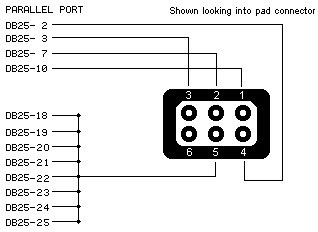

rboy_front.exe is a simple progrem that can be used to pass arguments to the reality_boy emulator. Here is a rundown of the various options and there ramifications.
Options
- Emulator Path: The path to the reality_boy executable
- Rom Path: The path to the rom to run in the emulator
- Display mode: set the screen resolution frame (window) is the default mode
- 3D Mode: Choos normal or a 3D display mode, Red Blue is analgraph mode. Interlaced should support mostshuter glasses, as well as I-glasses
- Zoom: Set the level of zoom on the display (1x-6x) or stretch to fill the window in full screen mode.
- Palette: Select the apropriet palette
- Brightness: Brighten or darken the display by a multiplicitive factor [0.1-3.0]
- Frame Skip: Number of frames to skip before refreshing the display hit -/= while in the game to adjust this as well [0-9]
- Key map: Select standard or alternate keyboard mapping
- VB Controller: Select the paralel port that your VB controller is hooked up to.
- Joy: Enable joystick support (dissabled).
- Swap Display: flip the 3D efects (you can hit ']' while in the game to do this as well)
- Horizontal 2x: double the width of the screen, usefull for interlaced mode when your glasses don't compensate for the aspect ratio.
- No Throttle: turn off all speed throtling
- Status Line: display the FPS during emulation, press '0' to togle in game
- Long Timmer Hack: Force a longer duration to the timmer
- Vertical Force hack: Fixes Vertical Force, game won't run without this
- Debug: starts the interactive debugger, currently only works in the debug build
- Dissasembly: generate disasembler dump of all code executed during emulation
- Console Output: dump debug messages to the console instead of to a file
Keyboard Mapping
Paralel Port interface
Hook your VB controller up to the paralel port using the folowing diagram in order to use it as an input device to reality boy. This makes playing games on the emulator 100% better, it's highly recomended.
